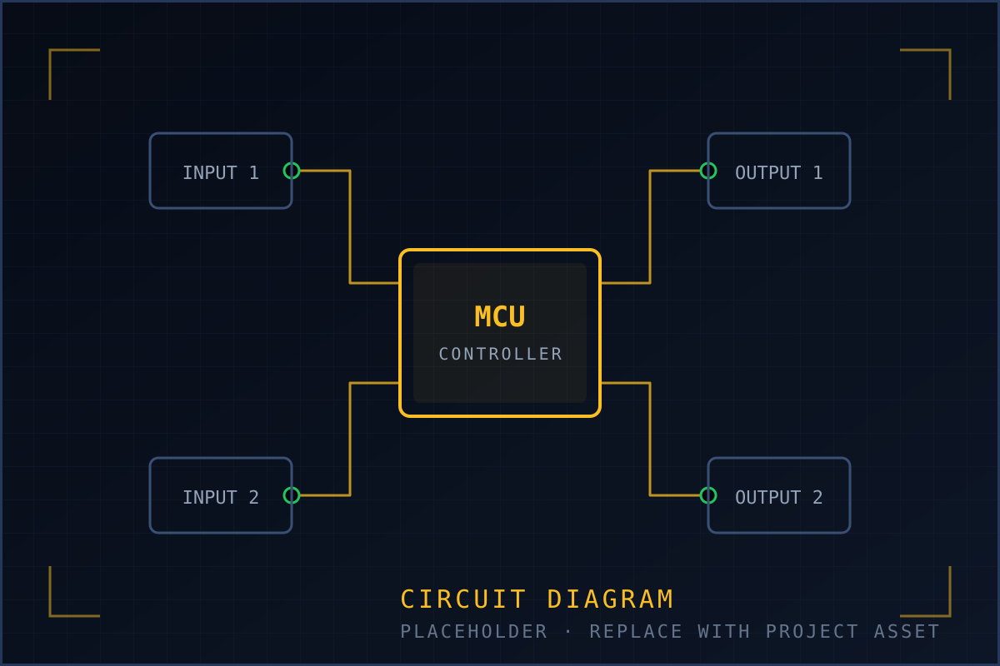
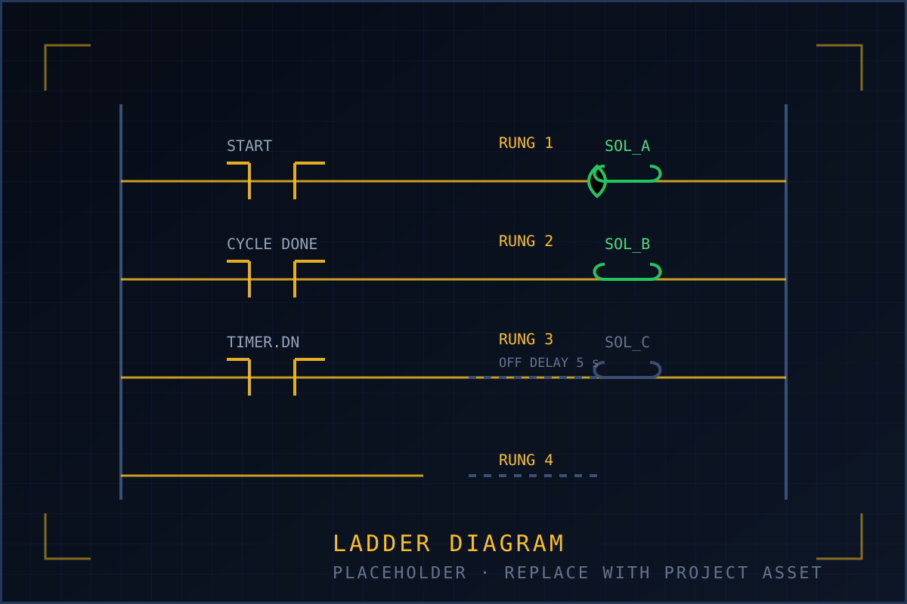
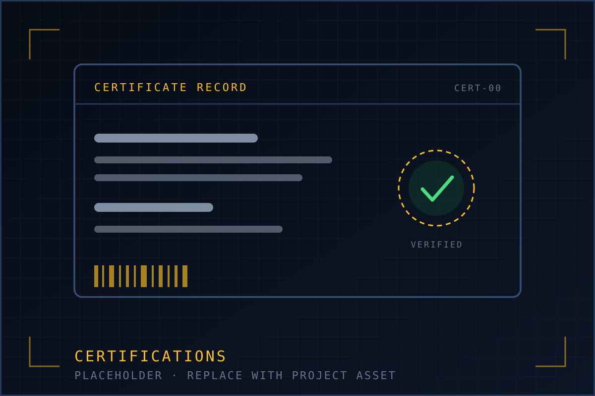
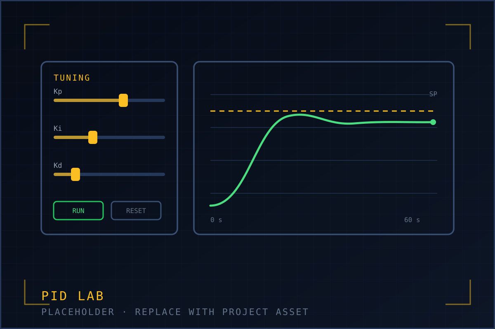

VP-01 // PORTFOLIO
Vipul Pawar
Instrumentation Engineering Student
Building reliable automation, embedded and secure industrial systems.
- PLC / DCS
- OT/ICS Security
- Embedded / IoT
- Reliance Intern
AB-002 // ABOUT
About
I am an undergraduate with a strong interest in automation and programming. I started out with C and NI LabVIEW, and found my way into software development during junior college through C++, HTML and data structures & algorithms.
That mix is what I still work with today: control-side projects such as PLC sequencing and electro-pneumatics, embedded and IoT builds on ESP32 and Arduino, and web applications in Django. Alongside that I have been building up industrial cybersecurity knowledge — OT/ICS fundamentals, network segmentation and packet analysis — because the systems I want to work on depend on it.
I completed a summer internship at Reliance Industries Limited (PSF Instru), working on a study of software and program storage methods for industrial control systems, which gave me first-hand exposure to plant-side control networks and safety culture.
- Englishprofessional
- Hindinative
- Marathinative
- Germanelementary
- 01 · C programming
- 02 · NI LabVIEW
- 03 · C++ & HTML (junior college)
- 04 · Data structures & algorithms
NAV-003 // EXPLORE
Explore the sections
Every card links straight to its page — internship notes, projects, skills, certifications and the interactive PID lab.

PRJ-002 Projects Projects Five documented builds across PLC and electro-pneumatics, ESP32/Arduino embedded and IoT systems, and Django web applications. View details
SKL-003 Skills Skill Modules Five control-panel modules: automation & control, OT/ICS security & networking, embedded & IoT, software and tools. View details
CRT-004 Certifications Certifications Grouped record of OT/ICS security, PLC & automation, networking, programming and language courses, plus the education timeline. View details
PID-005 Interactive PID Tuning Lab Tune Kp, Ki and Kd against a first-order process with dead time and watch overshoot and settling time change live. No libraries, just canvas. View detailsCON-009 // CONTACT